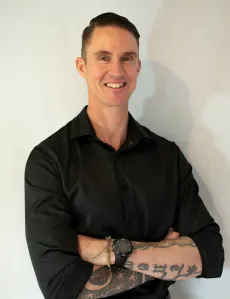

Strength, cardio, mobility, recovery.
Build the base that makes demanding work possible and repeatable.
 Josh Roche
Movement / Mindset / Mission
Josh Roche
Movement / Mindset / Mission
Holistic High Performance Coaching
Josh Roche works with high-performing individuals and groups to develop body, mind, identity, and purpose as one integrated system, so excellence becomes sustainable instead of extractive.
Holistic High Performance is a practical training approach for people who want to operate at a high level without splitting themselves into separate parts. Strength, recovery, cognition, skill acquisition, emotion, identity, service, and meaning are trained as one living system.
Operating System
Build the base that makes demanding work possible and repeatable.
Train attention, adaptability, and the ability to choose a better state under pressure.
Remove internal drag so your goals match the person you are becoming.
Connect performance to something deeper than metrics, novelty, or status.
Programs
In-depth, bespoke body and mind programs for individuals who feel called toward more. Josh maps where you are, where you want to go, and the practical road between those two points.
From restorative yoga and meditation to full-immersion strength, conditioning, and mindset environments. The dose is matched to the people in the room.
Structured group programs for people with a shared objective. Weekly calls, accountability, momentum, and clear adherence to the work.
For advanced performers who already have systems in place and want outside input on strategy, program design, and blind spots.

About Josh
Josh’s path has moved through the Army, three years as a monk, Vipassana meditation, mountaineering, rock climbing, ultra-running, paragliding, skydiving, hunting, and coaching. The common thread is direct experience: entering demanding environments, learning the terrain, and bringing back what helps people live with more courage and clarity.
His coaching is grounded in the same principle. Walk the talk, train the whole person, and build the inner and outer capacity to keep moving forward.
Field Notes
Josh’s writing returns to a few recurring ideas: challenge reveals training, the nervous system can be taught, motivation needs deeper roots than mood, and most limits are learned patterns waiting to be updated.
The aim is simple: learn to read the terrain, choose your state, and move with skill when life stops being comfortable.

Engagement
Get in touch, define the need, and decide whether the fit is right.
Work through a detailed questionnaire covering current issues, goals, constraints, and future demands.
Build the first training map across body, mind, recovery, identity, and practical lifestyle inputs.
Implement, review, adjust, and create the momentum needed for the next phase.
FAQ
People with a clear sense that their life, health, work, or performance could be bigger, stronger, and more aligned. Josh has worked with special forces, adventure athletes, people returning after layoffs, solo parents, and people who simply want to finally go after the life they keep imagining.
No. The work is for anyone ready to make real changes and willing to train the inputs that support those changes.
Yes. One-to-one and group coaching are available through major video conferencing platforms across time zones.
It depends on the goal, current capacity, constraints, and the kind of support required. The first conversation is used to establish the right frame.
Start The Journey
Start with the Capacity Audit to find the one domain capping your system, or take the free Off Switch guide and begin today. When you want the whole system built, the coaching program is the deep work.
Prefer to just talk? info@joshroche.com